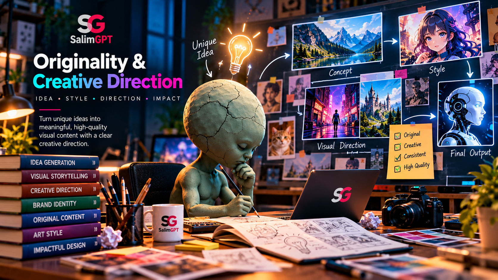
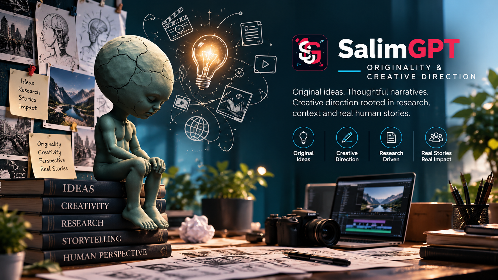

Documentary Question
The central question determines what the documentary is actually trying to understand, explain or investigate.
HOW WE WORK
SalimGPT develops documentaries through human editorial and creative direction. Research, evidence and available source material inform the work, while people determine the documentary question, structure, narrative emphasis, visual language, pacing and final presentation.
AI may help generate options, drafts or production assets, but it does not determine SalimGPT’s editorial point of view or creative direction. Final creative and publication decisions remain human-led.

CORE PRINCIPLE
Documentary subjects are rarely new in themselves. History, science, technology, society and human experience are studied and discussed by many people. Originality therefore does not require pretending that a subject has never been explored before.
What matters is how the documentary question is defined, which evidence is selected, how sources are connected, what context is added, how the narrative is structured and how the final visual and editorial treatment is developed.
SalimGPT’s creative direction is built through those human decisions.
CREATIVE FOUNDATIONS
Originality develops across the entire production process, from the initial research question to the final audiovisual presentation.
The central question determines what the documentary is actually trying to understand, explain or investigate.
Source choices, evidence priorities and contextual material shape the intellectual foundation of the work.
The order of ideas, evidence, chronology and explanation determines how audiences experience the subject.
Maps, archival media, typography, graphics, reconstruction and illustration create a distinct visual treatment.
Tone, explanatory depth, attribution and the handling of uncertainty influence the documentary’s editorial character.
Editing, pacing, narration, sound and visual sequencing bring the documentary into its final creative form.

HUMAN CREATIVE DIRECTION
A collection of sources does not automatically become a documentary. Human creative direction determines how research is transformed into a coherent narrative and how that narrative is expressed through writing, visuals, editing and sound.
The same evidence could support many different documentary structures. Choosing among those possibilities requires editorial purpose, judgment and creative intent.
EVIDENCE & INTERPRETATION
Documentary storytelling often requires interpretation. Visual metaphors, illustrative sequences, narrative transitions and reconstruction can help explain complex subjects.
Those techniques should not change what the underlying evidence establishes. When a creative element is illustrative rather than documentary evidence, its role should remain editorially appropriate to the context.
What do the underlying sources actually establish?
What explanatory conclusion is being developed from that evidence?
Which elements visually represent an idea rather than document it directly?
Could the creative treatment cause a different factual impression?
INSPIRATION & SOURCE MATERIAL
Documentary development can involve studying existing reporting, scholarship, archives, books, films, visual references and other materials. Those sources can provide facts, context, leads and inspiration without determining the final creative expression of a SalimGPT documentary.
Existing material can help identify facts, debates, chronology, evidence and further sources that require examination.
Source-specific claims, quotations and material should be attributed where attribution is editorially or legally appropriate.
SalimGPT develops its own documentary structure and narrative organization rather than treating another work as a template for reproduction.
Visual treatment, pacing, narration and other creative decisions are developed according to the documentary’s own editorial purpose.
AI & ORIGINALITY
AI tools can assist brainstorming, drafting, visual exploration, language work and production. They can produce many possible outputs quickly, but quantity of generated material is not the same as having a clear documentary concept.
Human creative direction decides what is useful, what should be rejected, what must be revised and how separate elements should be combined into a coherent documentary.
VISUAL DIRECTION
Documentary visual development can draw from historical references, design traditions, archival aesthetics and contemporary production techniques. Those influences can inform creative exploration without requiring the final work to reproduce the distinctive expression of another production.
SalimGPT’s visual direction is developed around the needs of the subject, evidence, platform and intended audience.
MULTILINGUAL CREATIVE DIRECTION
Different languages may require changes in sentence rhythm, terminology, explanation, narration length or cultural framing. Those adaptations can improve accessibility while preserving the underlying evidence and editorial intent.
Creative adaptation should therefore serve the language edition without turning it into a materially different factual account.
CREATIVE REVIEW
Individual elements can appear effective in isolation but still create inconsistency, imitation or factual confusion when assembled together. Final review therefore considers the documentary as a complete publication.
Does the final work still serve the documentary question and editorial objective?
Does the narrative organization clearly reflect the research rather than merely follow a production formula?
Do graphics, imagery, typography and motion form a coherent treatment appropriate to the subject?
Do creative decisions remain consistent with the evidence and intended factual meaning?
Have generated materials been selected, revised and contextualized through human creative direction?
Has the completed documentary received the necessary human editorial and creative review before publication?
EDITORIAL RESPONSIBILITY
Whether a production element is written, designed, edited or AI-assisted, it becomes part of the documentary only through editorial selection and approval.
SalimGPT therefore treats the final published work as a human-reviewed editorial product rather than attributing responsibility for the documentary to the tools used during production.
HOW WE WORK
How research, evidence and storytelling connect.
How research moves through creation and review.
How AI supports production while people retain authority.
How visual and generated media are developed and reviewed.
Principles guiding judgment, review and publication.
How published work can be reviewed after release.